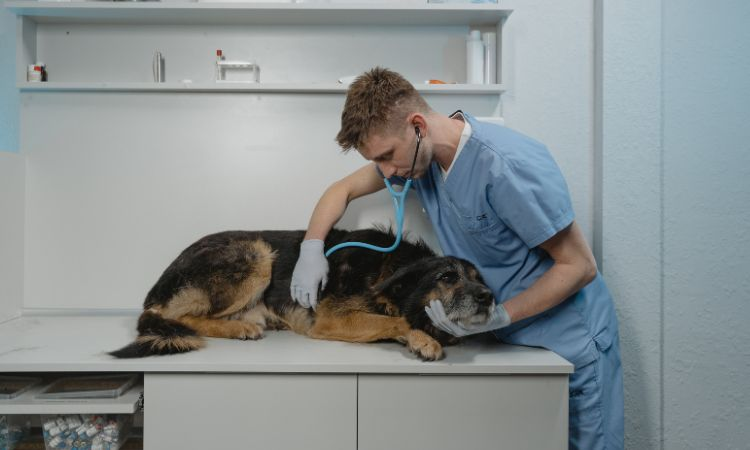

Vegetales frescos: Espinacas, zanahorias, lechuga romana.
Suplementos de calcio: Como hueso de sepia.
Agua fresca: Siempre disponible.
Evitar
Aguacate (tóxico)
Chocolate
Cafeina
Papas
Alimentos grasosos o salados
Gestación
1. ¿Cuánto dura la gestación?
Perros:
Dura entre 58 y 68 días, dependiendo de la raza y el número de cachorros.
Las razas más pequeñas suelen tener gestaciones más cortas que las grandes.
Gatos:
Entre 63 y 67 días.
Es común que las gatas puedan dar a luz hasta 5-6 gatitos en una sola camada.
Hámsters:
Su gestación es muy corta, de solo 15-22 días, dependiendo de la especie
Aves:
No tienen "gestación", se cuenta el tiempo desde que ponen los huevos hasta que eclosionan
Periquitos: 17-20 días.
Canarios: 13-15 días.
Loros pequeños: 21-30 días.
2. ¿Cómo puedo saber si mi mascota esta embarazada?
Perros y Gatos
Aumento del abdomen: El abdomen se agranda a medida que avanza la gestación.
Cambios en las mamas: Más grandes, rosadas, pueden secretar leche en etapas avanzadas.
Comportamiento: Letargo o comportamiento más cariñoso.
En perros: Puede haber una ligera secreción vaginal.
Confirmación: Una ecografía a los 21-25 días o radiografías después de 45 días confirmarán la gestación.
Hámsters
Aumento del tamaño abdominal: El abdomen se expande notablemente.
Comportamiento: Pueden volverse agresivos y comienzan a construir un nido con materiales disponibles.
Incremento en el apetito: Comerán más debido a la gestación.
Aves
Signos visibles: No hay signos visibles de "embarazo".
Huevos fértiles: Si los huevos son fértiles permanecera más tiempo en el nido.
3. ¿Debo cambiar su alimentación durante el embarazo?
Perros y Gatos
Alimento especializado: A partir de la mitad de la gestación, usa alimento para madres gestantes o lactantes.
Aumento de comida: Incrementa la cantidad de comida un 25-50% durante las últimas semanas.
Agua fresca: Proporciónales agua limpia y fresca constantemente.
Hámsters
Proteínas: Incluye proteínas como huevo cocido y pequeñas cantidades de pollo cocido.
Vegetales frescos: Proporciona zanahorias, espinacas u otros vegetales seguros en pequeñas cantidades.
Agua y comida: Asegúrate de que siempre tengan suficiente agua y comida disponible.
Aves
Calcio y proteínas: Incrementa alimentos como cáscaras de huevo trituradas, semillas y frutas frescas.
Agua fresca: Mantén el agua fresca siempre disponible.
4. ¿Cómo debo prepararme para el parto?
Perros y Gatos
Área tranquila: Crea un espacio cómodo con mantas o toallas limpias donde puedan parir.
Evitar distracciones: Minimiza ruidos fuertes y distracciones para mantener un ambiente calmado.
Supervisión: Mantente cerca para observar, pero evita intervenir a menos que sea necesario.
Hámsters
Material para el nido: Proporciona papel higiénico o viruta no tóxica para que construyan un nido cómodo.
Evitar manipulación: No los manipules ni limpies la jaula cerca de la fecha de parto para reducir el estrés.
Aves
Nido adecuado: Coloca un nido apropiado dentro de la jaula para que puedan usarlo cómodamente.
Entorno seguro: Asegúrate de que el lugar sea tranquilo y esté libre de depredadores o ruidos fuertes.
5. ¿Qué hago si hay complicaciones durante el parto?

Perros y Gatos
Intervalo entre crías: Consulta al veterinario si pasan más de 2 horas entre el nacimiento de cada cría.
Contracciones intensas: Llama al veterinario si las contracciones duran más de 30 minutos sin que nazca una cría.
Secreciones anormales: Busca atención inmediata si hay secreciones verdes o rojas en exceso.
Hámsters
Evitar el estrés: El estrés puede interrumpir el parto o llevar a que la madre rechace o dañe a las crías.
Problemas evidentes: Consulta a un veterinario si notas alguna complicación durante el parto.
Aves
Distocia (problemas para poner huevos): Busca ayuda veterinaria si la hembra muestra sintomas anormales.
6. ¿Cómo cuido a la madre y las crías después del parto?
Perros y Gatos
Alimentación temprana: Asegúrate de que las crías se alimenten pronto, ya que el calostro es crucial para su inmunidad.
Ambiente adecuado: Mantén un área cálida y tranquila para la madre y las crías.
Atención a la madre: Proporciona a la madre comida y agua en abundancia para su recuperación.
Hámsters
Evitar manipulación: No toques a las crías ni el nido durante las primeras dos semanas para evitar que la madre las rechace.
Alimentación extra: Asegúrate de proporcionar alimento y agua extra para la madre.
Aves
Mantenimiento del nido: Mantén el nido limpio y a una temperatura adecuada para los polluelos.
Alimentación de la madre: Proporciona alimentos ricos en calcio y proteínas a la madre para que pueda alimentar a los polluelos.
Juguetes Sustentables
Tutoriales Sencillos para darle Diversión a tu Macota.
Gatos
Rascador de Cartón
Rascador Casero para Gatos
Materiales
Cola o silicona líquida
Cartón
Cinta adhesiva
Corcho (opcional)
Pasos a seguir
Corta varias piezas de cartón que tengan siempre un mismo ancho, por ejemplo, de 10 centímetros.
Debes respetar esta medida para que quede a la misma altura.
Empieza a enrollar las tiras de cartón sobre sí mismas y utiliza la cola para ir fijándolo.
Cuando acabes de utilizar una tira, antes de poner la siguiente, utiliza la cinta adhesiva elegida para que no se desmonte.
Sigue agrandando el rascador hasta conseguir el tamaño deseado.
Fija bien el tramo final con cola para evitar que se abra.
Finalmente, puedes decorarlo con pintura o como nosotros, con corcho. ¡Tú eliges!
Juguete y Dispensador de Alimento para Gatos
Estimula su inteligencia y su actividad física y resulta positivo para gatos con ansiedad o estrés.
Materiales
Botella
Bolígrafo
Cúter
Lija
Premios o comida para gatos
Como extra podemos añadir papel de periódico o de colores para decorar, plumas, juguetes, un cascabel... ¡Todas las opciones son válidas!
Pasos a seguir
Dibuja pequeñas redondas o cuadrados en la botella de plástico.
Recorta con el cúter las marcas realizadas.
Lija los bordes que han sido recortados para evitar que el gato se haga daño.
Decora a tu gusto.
Llena de comida e invita a tu gato a jugar.
Ratón de Tela
Materiales
Tela de algodón o fieltro.
Relleno (algodón, tela reciclada).
Hilo y aguja.
Botón o tela para hacer los ojos (opcional).
Instrucciones
Corta la forma del ratón:
Dibuja y corta dos formas de ratón de tela (puedes usar una plantilla) y un par de orejas pequeñas.
Cose las piezas:
Une las dos piezas de tela dejando un pequeño espacio para el relleno y cose los bordes.
Rellena el ratón:
Llena la forma con el material de relleno.
Cierra y decora:
Cose la abertura para cerrar la forma.
Agrega un botón pequeño o una pieza de tela como ojo y una cuerda o hilo para hacer la cola.
Listo para jugar:
Tu gato disfrutará de este juguete de tela que puede golpear y atrapar.
Casa de Cartón
Materiales
Cola o silicona líquida
Bolígrafo
Regla
Caja de cartón
Pintura (opcional)
Pasos a seguir
Recorta las pestañas:
Recorta las pestañas de la caja de cartón de la base sobrantes para que no sean incómodas para tu gato.
Después, pega con cola para que se mantenga unido.
Corta los lados superiores:
Corta 5 centímetros por cada lado superior de la caja, con la intención de hacer todas las pestañas superiores más largas.
Dale forma al techo:
Utiliza un cartón doblado en forma de "V" para dar forma al "techo" y ayudar a pegar las dos pestañas laterales.
Marca y recorta la forma de la casa:
Con la ayuda del bolígrafo, marca en las pestañas delantera y trasera la forma de la casa, recorta y pega.
Decora y personaliza:
Después, puedes añadir ventanas, pintura, decoración y hasta un cojín dentro de la caja. ¡Las opciones son ilimitadas!
Perros
Camita hecha con un suéter
Materiales
Un suéter viejo (preferiblemente de lana o algodón).
Relleno (algodón, tela reciclada, o cojines viejos).
Aguja e hilo o máquina de coser (opcional).
Cinta adhesiva o alfileres.
Instrucciones
Preparar el suéter:
Lava el suéter si es necesario y asegúrate de que esté limpio y seco.
Extiende el suéter sobre una superficie plana y alisa cualquier arruga.
Formar la base de la camita:
Dobla el suéter de manera que la parte inferior quede en la parte superior.
Si tiene cuello alto, dóblalo o recórtalo para mayor comodidad.
Coser los extremos:
Junta los extremos del suéter para cerrar los lados y forma una "cuna". Puedes coserlos a mano o con máquina de coser.
Añadir el relleno:
Llena la camita con el material de relleno elegido.
Ajusta el relleno para que quede uniforme.
Cerrar la camita:
Cose o dobla los extremos abiertos y asegúralos con cinta o alfileres.
Ajustes finales:
Acomoda la camita y agrega una manta suave o un cojín adicional.
Juguete de tira de tela para masticar
Materiales
Tela vieja (camiseta, toalla, o tela de retazos).
Tijeras.
Hilo resistente (opcional).
Instrucciones
Corta la tela: En tiras largas de 1.5 a 2 cm de ancho y 30-40 cm de largo.
Une las tiras: Junta tres o más tiras y haz un nudo en un extremo.
Trenza la tela: Trenza las tiras como si estuvieras trenzando un cabello.
Asegura el juguete: Haz un nudo adicional en los extremos o cóselos.
Listo para jugar: Tu mascota podrá masticar y jugar con el juguete.
Juguete y Dispensador de Alimento
Estimula su inteligencia y su actividad física y resulta divertido para los perritos
Materiales
Botella
Bolígrafo
Cúter
Lija
Premios o comida para perros
Como extra podemos añadir papel de periódico o de colores para decorar, plumas, juguetes... ¡Todas las opciones son válidas!
Pasos a seguir
Dibuja pequeñas redondas o cuadrados en la botella de plástico.
Recorta con el cúter las marcas realizadas.
Lija los bordes que han sido recortados para evitar que el gato se haga daño.
Decora a tu gusto.
Llena de comida e invita a tu amigo a jugar.
Casa para mascotas hecha con tarimas de madera
Materiales
Tarimas de madera recicladas.
Lija o máquina lijadora.
Tornillos o clavos.
Martillo o destornillador.
Sierra.
Cinta métrica.
Pintura o barniz no tóxico (opcional).
Hilo o cuerda para decorar (opcional).
Instrucciones
Preparar las tarimas: Limpia y lija las tarimas para suavizar bordes y superficies.
Medir y cortar: Determina el tamaño de la casa y corta las piezas necesarias.
Armar la base: Une las piezas de la base con tornillos o clavos.
Construir las paredes: Fija las paredes y corta una abertura para la entrada.
Colocar el techo: Asegura el techo con tornillos o clavos.
Pintar o decorar: Aplica pintura o barniz y agrega detalles decorativos (opcional).
Verificar y probar: Revisa que no haya partes peligrosas y coloca la casa en un lugar adecuado.
Hámsters
Escalera para hámster
Materiales
Varios palitos de chupete o paleta.
Pegamento no tóxico.
Instrucciones
Reúne los palitos de chupete: La cantidad dependerá de qué tan alta quieras que sea la escalera.
Enjuaga los palitos: Lava los palitos para quitar residuos de comida y evitar que se queden pegajosos.
Pega los palitos: Usa pegamento no tóxico para unir los palitos de chupete, asegurándote de que no sea peligroso para el hámster.
Coloca la escalera en la jaula:
Coloca la escalera desde el piso de la jaula hasta otro juguete.
También puedes usarla como un puente entre otros juguetes, como cajas de cartón o cajas de leche.
Túneles para hámster
Materiales
Tubos de papel higiénico.
Viruta.
Cajas de cartón pequeñas.
Instrumento para cortar (cuchillo, tijeras o cortador de cajas).
Instrucciones
Corta agujeros en las cajas: Haz agujeros circulares en las cajas de cartón para encajar los tubos de papel higiénico.
Inserta los tubos: Coloca los tubos de papel higiénico en los agujeros. Asegúrate de que encajen bien, y si es necesario, agranda los agujeros.
Asegura los tubos: Usa pegamento no tóxico para fijar los tubos a las cajas de cartón.
Cubre el túnel con viruta: Para hacerlo más desafiante para el hámster, cubre el túnel con viruta, dejando un espacio libre para la entrada y salida.
Casa para hámster
Materiales
Madera no tratada o cartón fuerte.
Pegamento no tóxico o cinta adhesiva resistente.
Clavos pequeños o tornillos (si usas madera).
Tela o aserrín para el interior.
Instrucciones
Corta las piezas: Usa madera o cartón para cortar las piezas de la casa, incluyendo un piso y paredes con una pequeña entrada.
Arma la estructura: Une las piezas con pegamento, cinta adhesiva o clavos si usas madera.
Lija los bordes (opcional): Si usas madera, lija los bordes para evitar que el hámster se lastime.
Decora (opcional): Puedes pintar la casa con pintura no tóxica y dejarla secar antes de colocarla en la jaula.
Prepara el interior: Añade tela suave o aserrín para crear un lugar cómodo para que tu hámster descanse.
Coloca la casa: Ubica la casa en la jaula del hámster, asegurándote de que esté segura y cómoda.
Laberinto para hámster
Materiales
Varios tubos de papel higiénico.
Pegamento no tóxico.
Instrucciones
Coloca los tubos: Coloca los tubos uno dentro de otro para formar el laberinto. Asegúrate de que no estén demasiado ajustados.
Une los tubos: Usa pegamento no tóxico para pegar los tubos entre sí y formar el laberinto.
Distribuye los túneles: Coloca los tubos en diferentes direcciones dentro de la jaula, creando un laberinto desafiante.
Coloca un premio: Coloca un premio al final del laberinto para motivar a tu hámster a moverse rápidamente.
Aves
Comedero Reciclado con Tubo de Cartón
Materiales
Tubos de cartón (como los de papel higiénico)
Cuerda o hilo
Semillas o golosinas para aves
Instrucciones
Limpia la Botella: Limpia una botella plastica .
Rellena el tubo: Coloca semillas o golosinas para aves dentro de cada sección.
Haz agujeros en los extremos: Haz agujeros en ambos extremos de la botella y pasa un trozo de cuerda, coloca objetos donde el ave se pueda posar y comer
Cuélgalo en la jaula: Ata un nudo en los extremos de la cuerda para colgar el comedero en la jaula.
Casa para Pájaros Reciclada
Materiales
Cajas de cartón recicladas
Cuerda o hilo
Hojas secas, virutas de madera, o paja
Instrucciones
Forma la estructura: Corta las cajas de cartón para crear la estructura de la casa.
Llena la casa: Rellena la caja con materiales como hojas secas o virutas de madera.
Perfora agujeros: Haz agujeros en los lados de la caja y pasa una cuerda para colgar la casa.
Opcional: Puedes pintar la casa con pintura no tóxica si lo deseas.
Bebedero
Materiales
Una botella plastica
Cuerda o hilo fuerte
Instrucciones
Corta la botella: Haz un corte en la parte inferior de la botella para obtener dos piezas.
Agujeros: A la parte de abajo de la botella hazle 4 agujeros por los cuales pasa un hilo, haz dos agujeros a la parte superior de la botella para colgarla
Enlaza las partes: Con la cuerda ata la parte de abajo de la botella a la boca de esta.
Cuélgalo: Ata el bebedero a la jaula o a un árbol.
Casa con comida
Materiales
Lata limpia
Cuerda o hilo
Instrucciones
Selecciona una lata: Selecciona y limpia una lata.
Enlaza las piezas: Amarra con la cuerda la lata
Cuélgalo: Ata los extremos de la cuerda y cuélgalo para que las aves puedan jugar con él.
Noticias
Entérate de las últimas novedades del mundo animal.
Adopciones
¡Se Busca!
Si deseas anunciar la adopción o búsqueda de un hogar para alguna mascota...
Comunícate con nosotros
Correo electrónico:
huellitasvip@gmail.com
Número telefónico:
7225276159
Por un aporte de $50MXN podrás publicar tu anuncio y ayudar a encontrar un nuevo hogar para tu compañero peludo...
Foro
Asistente de IA
¡Hola! Soy tu asistente virtual. Debido a que estoy en fase Beta respondo a palabras clave ¿En qué puedo ayudarte hoy?


 Labrador Retriever
Labrador Retriever
 Perros Criollos (Mestizos)
Perros Criollos (Mestizos)
 Dieta Básica
Dieta Básica
 Perros y Gatos
Perros y Gatos